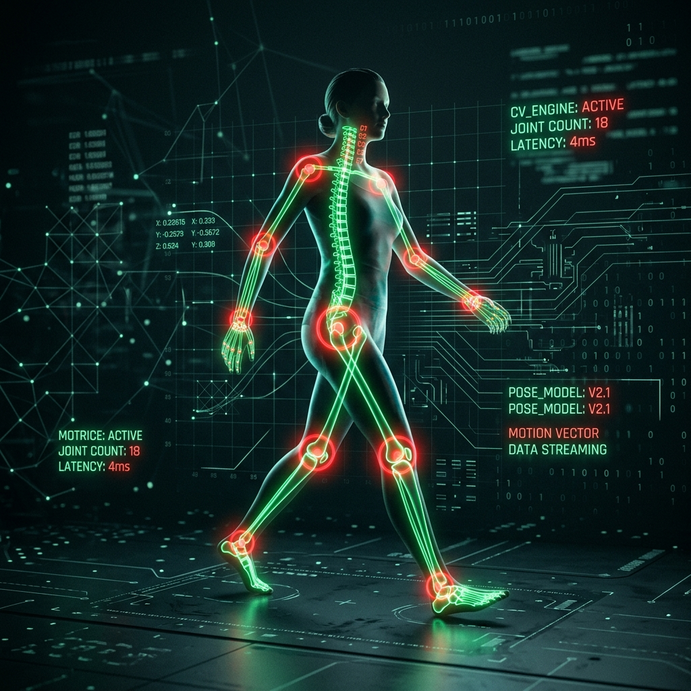

System Methodology
Biomechanical kinematics & computer vision implementation.
Body Detection via Computer Vision
Our platform is powered by Google MediaPipe Pose, a cutting-edge machine learning framework capable of high-fidelity body tracking.
When you start the camera, the video feed is processed entirely locally on your device in real time. The AI model analyzes each frame and identifies 33 distinct 3D landmarks across your body. These landmarks include joints such as shoulders, elbows, wrists, hips, knees, and ankles.
By mapping out these key points, the AI understands your spatial orientation and exact posture at any given millisecond without needing any wearable sensors.

Calculating Biomechanical Angles
Once the AI has mapped the coordinates of your joints (X and Y positions on the screen), we apply geometric formulas to calculate the angles between them.
For example, to calculate the angle of your elbow during a Biceps Curl, we use the coordinates of three points: the Shoulder (A), the Elbow (B), and the Wrist (C).
We use the arctangent function to determine the angle in degrees:
let radians = Math.atan2(c.y - b.y, c.x - b.x)
- Math.atan2(a.y - b.y, a.x - b.x);
This provides a highly accurate joint angle that updates seamlessly up to 60 times per second.
Drawing Conclusions (State Machine)
We combine the real-time angles with a state machine logic system to evaluate your exercise performance and count repetitions.
Every exercise has defined physiological thresholds. For a Squat, the AI monitors your knee angle. When you are standing straight, the angle is around 180°. When you lower your hips, the angle decreases.
- The “Down” stage: If your knee angle drops below 100°, the AI recognizes you have successfully reached the bottom of the squat and transitions the state to “Down”.
- The “Up” stage: As you stand back up, if the angle exceeds 160° and your previous state was “Down”, the AI registers a full, completed repetition.
By constantly comparing your joint angles against these strict thresholds, the AI ensures you are achieving a full range of motion and only counts reps that are performed correctly.